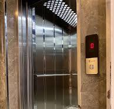

Bu proje, çay üretimi sürecinde kalite kontrolü sağlamak ve tarımsal verimliliği artırmak amacıyla tasarlanmış bir drone sistemi geliştirmeyi hedeflemektedir...
Bu proje, çay üretimi sürecinde kalite kontrolü sağlamak ve tarımsal verimliliği artırmak amacıyla tasarlanmış bir drone sistemi geliştirmeyi hedeflemektedir. Drone, yüksek çözünürlüklü kamera ve görüntü işleme algoritmaları kullanarak çay tarlalarını tarayacak, arazideki yabani otları ve hastalıkları tespit edecek. Çay fabrikalarına yönelik satışlar yapılacak, ayrıca arazi sahiplerine yalnızca kalite kontrol hizmeti sunulacaktır. Proje, çay üreticilerine verimli, düşük maliyetli ve hızlı bir çözüm sunmayı amaçlamaktadır.

Asansör Projesi
Günümüzde asansör bulunmayan yapı neredeyse kalmamıştır. Özellikle çok katlı binalarda ve hastane gibi asansörün çok sık kullanıldığı yapılarda asansörler sık sık gereksiz yere meşgul edilmektedir...
Günümüzde asansör bulunmayan yapı neredeyse kalmamıştır. Özellikle çok katlı binalarda ve hastane gibi asansörün çok sık kullanıldığı yapılarda asansörler sık sık gereksiz yere meşgul edilmektedir. Bu durum herkes için zaman kaybı meydana getirmektedir. Özellikle hastanede asansör bekleyen hastalar için bu durum daha da büyük bir sorun oluşturmaktadır. Bu projedeki amacımız bu zaman kayıplarını engelleyip asansör kullanımını daha seri ve pratik bir hale getirmektir.